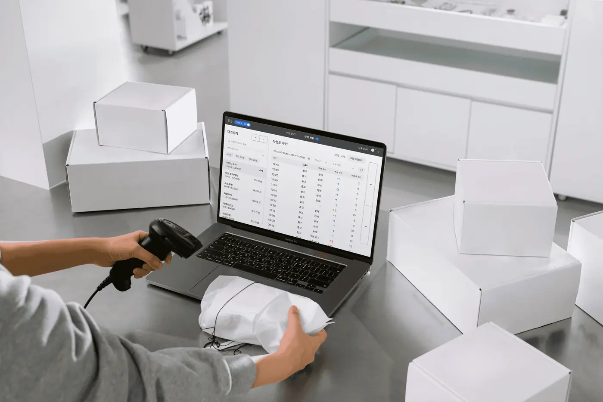

- 홈
- 수발주 프로그램
매장에 맞는 수발주 시스템,
그대로 만들어드립니다
정해진 프로그램에 운영 방식을 맞추지 마세요. 포스모스는 본사와 가맹점이 일하는 방식에 맞춰 발주부터 결제, 재고 관리, 정산까지 원하는 대로 개발합니다. 발주 현황판 하나부터 시작해 필요한 만큼 기능을 늘릴 수 있습니다.
맞춤 개발
본사-가맹점 통합 관리
결제 연동
정산 자동화

개발 가능한 기능
필요한 기능만 골라서,
필요한 기능만 골라서,
필요한 만큼 확장
아래는 개발할 수 있는 기능의 예시입니다. 운영 방식에 맞게 빼거나 더할 수 있습니다.
- 가맹점별 실시간 발주 현황 관리
- 발주 대금 결제 연동 (결제대기 · 완료 자동 동기화)
- 판매량 대비 과다 발주 · 폐기 리스크 알림
- 매장별 재고 원장 · 정산 자동화
- 엑셀 다운로드, 감사 로그 등 운영에 맞는 기능 추가 개발

이런 고민이 있다면 맞춤 수발주가 답입니다
01
발주를 전화·메신저로 받는다
가맹점 발주가 흩어져 있으면 누락과 확인 작업이 늘어납니다. 한 화면에서 실시간으로 모아 봅니다.
02
기성 프로그램이 맞지 않는다
우리 본사만의 발주 흐름과 결재 단계를 그대로 시스템에 옮깁니다.
03
정산에 시간이 많이 든다
매장별 재고 원장과 발주 대금 정산을 자동으로 맞춰 반복 작업을 줄입니다.
수발주 프로그램, 이런 매장에 딱 맞습니다
가맹 본사2개 이상 매장·가맹점의 발주를 한곳에서 관리하고 싶은 곳
직영 다점포매장별 재고와 발주량을 비교하며 운영하고 싶은 곳
식자재 · 물류 공급사거래처 주문과 대금 결제를 자동으로 맞추고 싶은 곳
기존 방식이 불편한 곳지금 쓰는 발주 방식이 매장·본사 상황과 맞지 않는 경우
수발주 프로그램 자주 묻는 질문
어떤 곳에 적합한가요?
2개 이상의 매장이나 가맹점을 운영 중이거나, 기존 발주 방식이 매장·본사 상황과 맞지 않는 경우, 우리만의 발주 흐름대로 시스템을 맞추고 싶은 경우에 적합합니다.
어떤 기능을 만들 수 있나요?
가맹점별 실시간 발주 현황 관리, 발주 대금 결제 연동, 과다 발주·폐기 리스크 알림, 매장별 재고 원장과 정산 자동화, 엑셀 다운로드와 감사 로그 등을 운영 방식에 맞게 개발합니다.
개발 비용은 얼마인가요?
필요한 기능의 범위에 따라 달라집니다. 개발 문의를 남겨 주시면 운영 방식을 듣고 맞는 구성과 견적을 안내해 드립니다.
작게 시작해서 나중에 기능을 늘릴 수 있나요?
네. 발주 현황판 하나처럼 꼭 필요한 기능부터 시작해, 운영하면서 필요한 기능을 더해 갈 수 있습니다.